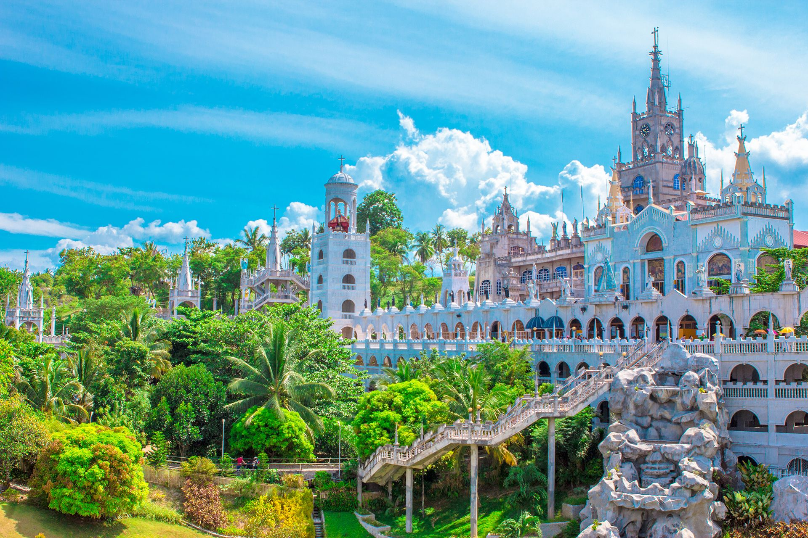
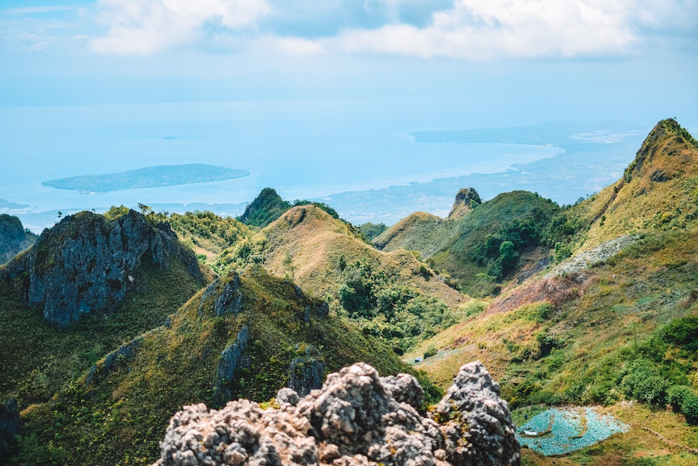

Tumalog Falls
A curtain like waterfalls that covers
the entire cliff with cool and clear water,
1 / 4

2 / 4

Simala Church
The design is inspired from European cathedrals.
The design is inspired from European cathedrals.
3 / 4

Osmeña Peak
It is considered a twin to Bohol’s Chocolate Hills.
It is considered a twin to Bohol’s Chocolate Hills.
4 / 4

Fort San Pedro
Fort San Pedro is said to be the oldest and the smallest fort in the Philippines, covering an area of 2,025 square meters.,
Fort San Pedro is said to be the oldest and the smallest fort in the Philippines, covering an area of 2,025 square meters.,